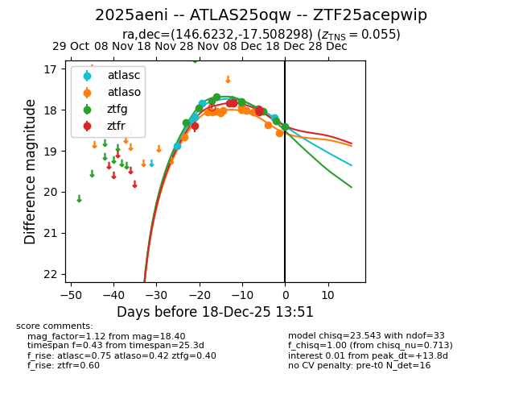
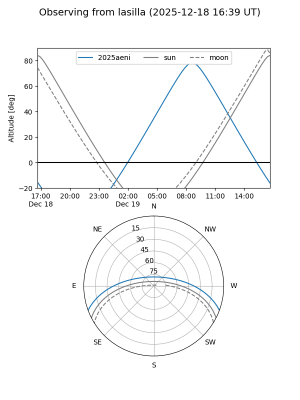
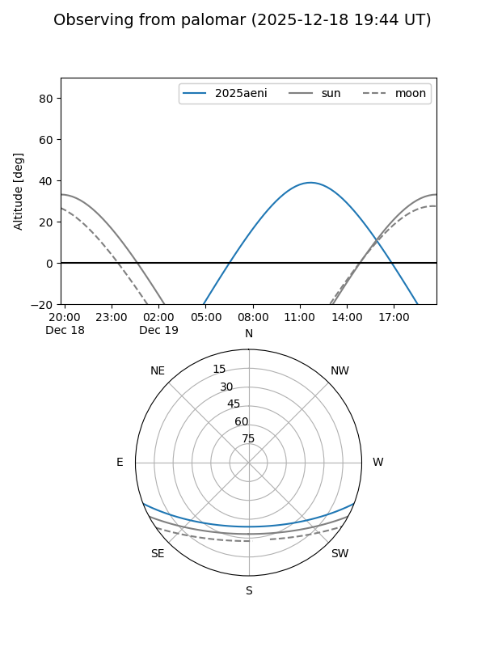
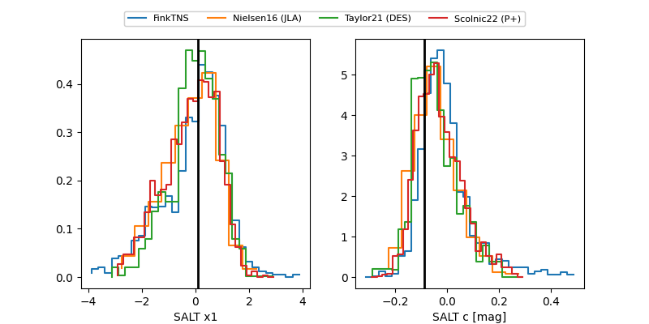

2025aeni
Target 2025aeni at 2025-12-19 13:07
Aliases and brokers:
FINK: fink-portal.org/ZTF25acepwip
Lasair: lasair-ztf.lsst.ac.uk/objects/ZTF25acepwip
ALeRCE: alerce.online/object/ZTF25acepwip
TNS: wis-tns.org/object/2025aeni
YSE: ziggy.ucolick.org/yse/transient_detail/2025aeni
alt names
ZTF25acepwip (ztf,fink_ztf)
2025aeni (tns,yse)
ATLAS25oqw (atlas)
Coordinates:
equatorial (ra, dec) = 146.6232,-17.50830
equatorial (HMS+DMS) = 09:46:29.56,-17:30:29.87
galactic (l, b) = (252.4705,+26.73685)
Flags:
confirmed ia
Photometry:
last atlasc=18.44, atlaso=18.57, ztfg=18.40, ztfr=18.00
7 atlasc, 13 atlaso, 11 ztfg, 6 ztfr detections
Lightcurve

Visibility


Additional plots
